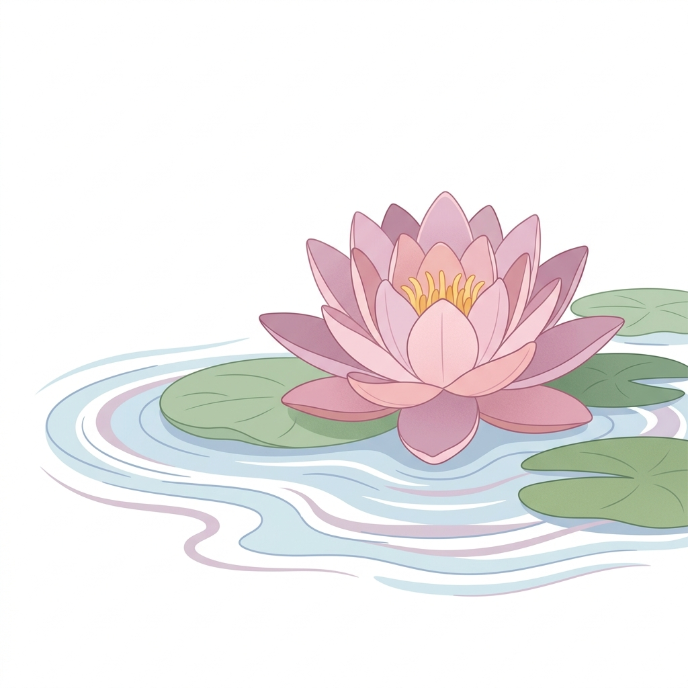
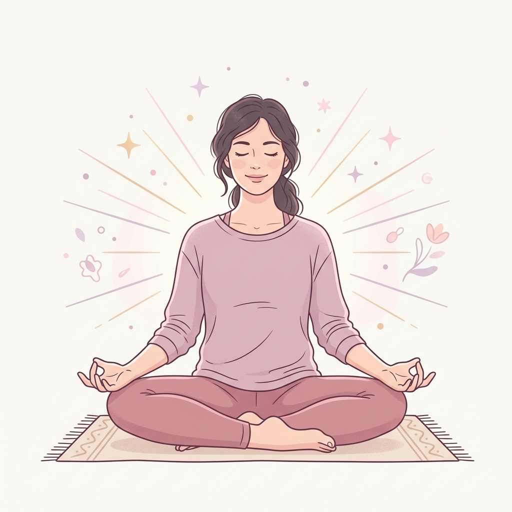

Meditación
La meditación es un método importante para aliviar los síntomas de la depresión postparto y manejar el estrés, la ansiedad y los pensamientos negativos.

🧘♀️ ¿Por qué es importante?
Dedicarse unos minutos al día es fundamental. Encontrar ejercicios y momentos de relajación te ayudará a reducir los niveles de cortisol (la hormona del estrés), conectar con tus emociones actuales y encontrar mayor tranquilidad, ya sea a solas o junto a tu bebé.
La meditación ayuda a calmar la mente de forma activa, reducir la tensión emocional acumulada en el día a día, cultivar el bienestar general y reconectarte contigo misma durante esta hermosa pero desafiante etapa. Hazlo a tu propio ritmo.

✨ ¿En qué se centra?
Yoga y respiración
Ejercicios de yoga suave y respiración guiada diseñados para relajar el cuerpo físico y calmar la agitación de la mente.
Meditación con tu bebé
Sesiones especiales para practicar sola o en contacto piel con piel con tu bebé, fortaleciendo el vínculo afectivo y la conexión emocional.
Relación materno-infantil
Fomenta la presencia, la calma compartida y la comprensión mutua a través de la respiración rítmica y la atención plena.
Disponible en medios digitales
Todos los ejercicios y meditaciones guiadas se encuentran disponibles en plataformas digitales, principalmente en YouTube, para que puedas reproducirlos cuando lo necesites, cómodamente desde casa.
Videos de meditación recomendados
Desliza o haz clic en las flechas para explorar. Al hacer clic en un video, se abrirá en la app o web de YouTube.

Respira y suelta
Ejercicios de respiración guiada ideales para reducir el estrés acumulado y rebajar la ansiedad diaria.

Conexión mamá y bebé
Meditación guiada enfocada en fortalecer el vínculo afectivo y la calma compartida entre ambos.

Calma tu mente
Meditación de atención plena para liberar tensiones mentales y regular pensamientos negativos.